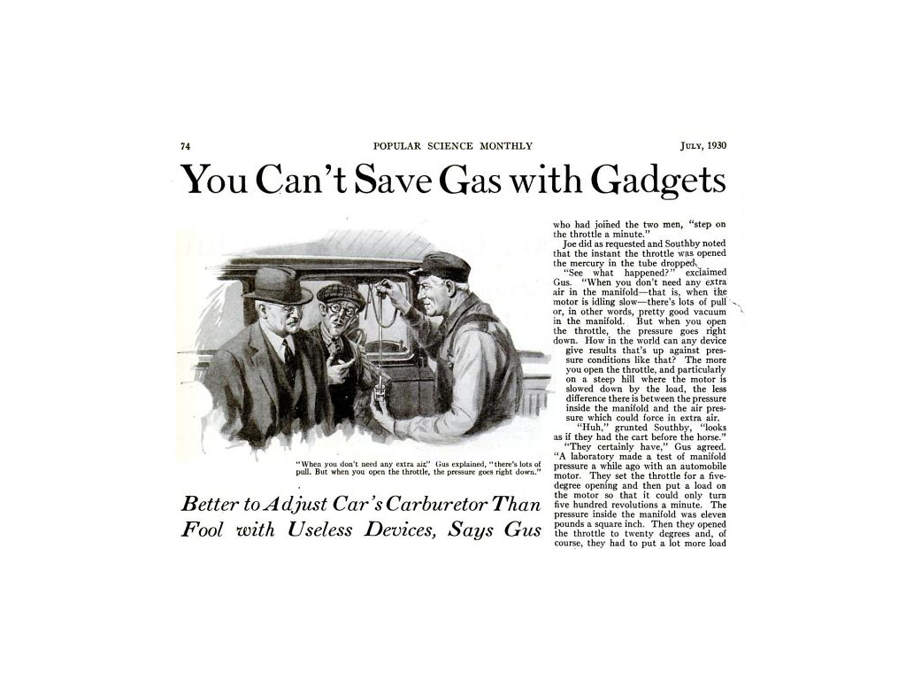
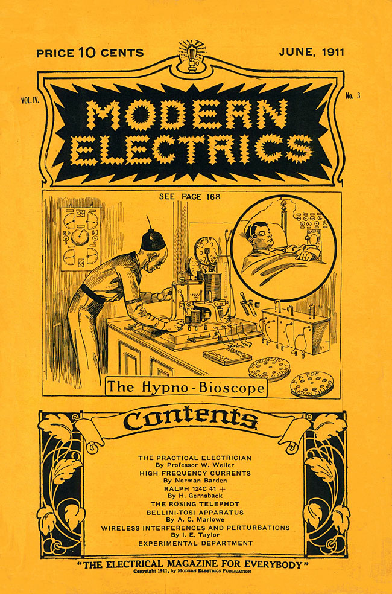

From Marlinspike to Mobile Media
Grant Wythoff | Columbia University
November 14, 2013
Society of Fellows Luncheon Lecture Series
From Marlinspike to Mobile Media



"I have found Americans out. They are gadget-minded. They have created a touch-the-button civilization."
-Joseph Fort Newton, 1937
"The machinery of propaganda is made of standardized gadgets by which you can detect it. One of these gadgets is slogans."
-Herbert Hoover, 1949


"Two hundred years ago, stories of this kind were not possible.
-Gernsback, "A New Sort of Magazine," 1927
SF is, then a literary genre whose necessary and sufficient conditions are the presence and interaction of estrangement and cognition, and whose main formal device is an imaginative framework alternative to the author's empirical environment.
-Suvin, "On the Poetics of the Science Fiction Genre"